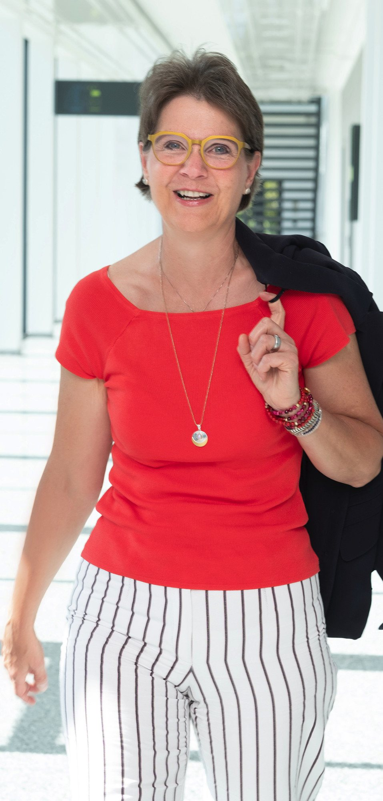

Nachfolgeberatung & Organisationsentwicklung
Nachfolge ist kein rein unternehmerischer Prozess. Sie entscheidet sich daran, wie klar Menschen Verantwortung übernehmen.
Ich begleite Unternehmerinnen, Unternehmer und Unternehmen in Nachfolgeprozessen, Organisationsentwicklung und Transformationsphasen. Mein Fokus liegt darauf, Klarheit zu schaffen – in Situationen, in denen Entscheidungen anstehen und Zukunft gestaltet wird.

Mein Hintergrund
20 Jahre Erfahrung in 3 Transformationsprozessen und die vielen Fragen, die wir uns nicht gestellt haben, prägen meine Arbeit bis heute.
Ich verbinde eigene Erfahrung in der Unternehmensnachfolge mit Beratung und der Arbeit als Sparringspartner, ergänzt durch einen systemischen Blick auf Organisationen.
Dabei arbeite ich an den Punkten, die in Unternehmen tatsächlich entscheidend sind: Strukturen, Dynamiken und Entscheidungsprozesse.
Gleichzeitig zeigt sich in meiner Arbeit immer wieder: Die entscheidenden Fragen entstehen nicht im Unternehmen. Sondern bei den Menschen, die es führen.
Meine Arbeitsweise
Ich arbeite klar, strukturiert und mit einem konsequenten Fokus auf das Wesentliche.
Ich reduziere Komplexität, mache Zusammenhänge sichtbar und begleite Entscheidungen bis sie tragfähig sind. Auch dort, wo es darum geht, Verantwortung zu übernehmen oder loszulassen.
Meine Haltung
Ich glaube nicht an schnelle Lösungen.
Ich glaube an Klarheit.
An Verantwortung.
Und an Entscheidungen, die bewusst getroffen und getragen werden.
Schlussgedanke
Nachfolge und Transformation sind selten nur fachliche Themen.
Sie berühren Verantwortung, Identität und die Frage, wie Zukunft gestaltet wird.
Und genau deshalb lassen sie sich nicht allein über Strukturen lösen.
Gespräch vereinbaren